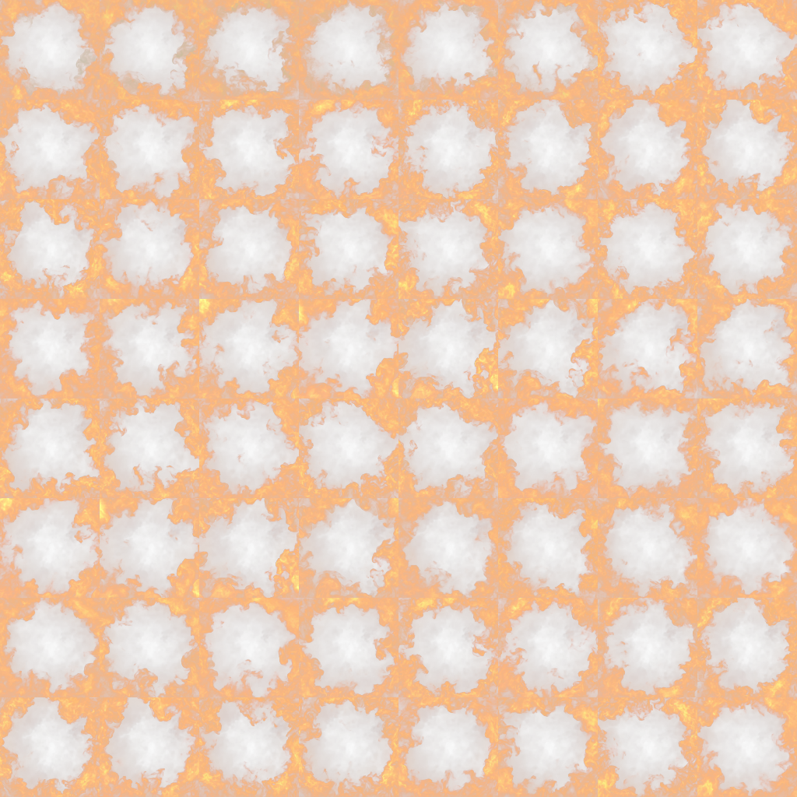

▦
Any square grid
8×8, 10×10, 12×12, 16×16 or custom up to 32×32. Frames are center-cropped to perfect squares.
Drop in a clip, pick a grid like 10×10, and get a perfectly square, seamlessly looping sprite sheet — with alpha cutouts for fire & smoke, power-of-two export, and a live preview. Runs locally, ships to your whole team.
Real 8×8 (64-frame) loop generated by the tool from a fire clip.
8×8, 10×10, 12×12, 16×16 or custom up to 32×32. Frames are center-cropped to perfect squares.
Motion-aware cross-blend in linear light hides the seam — or an optical-flow morph for sharper results.
Turn fire, smoke, sparks and explosions shot on black into clean cutouts with a real alpha channel.
Fit the sheet to 512–4096 so it drops straight onto the GPU. UV layout stays valid.
PNG, TGA, WebP, TIFF, EXR (HDR) and JPG, each with a JSON metadata sidecar for engine import.
See the source, the sheet, and the flipbook playing back side by side with an FPS scrubber.
Pure Python — no FFmpeg install needed. Share the folder with your team and they're set.
run.bat (Windows). It builds a
virtual environment, installs dependencies, and opens your browser.run.batpython -m venv .venv
source .venv/bin/activate
pip install -r requirements.txt
python app.py
# open http://127.0.0.1:8000/pip install -r requirements-dev.txt
pytest # 77 passing
The clip is sampled into N = cols×rows frames. For a loop we
sample N + B frames (B = blend frames). The trailing
B frames are the natural motion continuation just past the
seam; the first B output frames cross-fade from that continuation back
into the start of the clip:
result[i] = blend(P[i], P[N+i], w = (i+1)/(B+1)) for i < B
result[i] = P[i] otherwise
At the seam result[N-1] is followed by result[0] ≈ P[N] —
the frame that naturally comes next — so motion never pops, and the dissolve
returns to the clip's start over the next B frames.

.jsonColumns, rows, frame count, fps, loop & alpha settings.